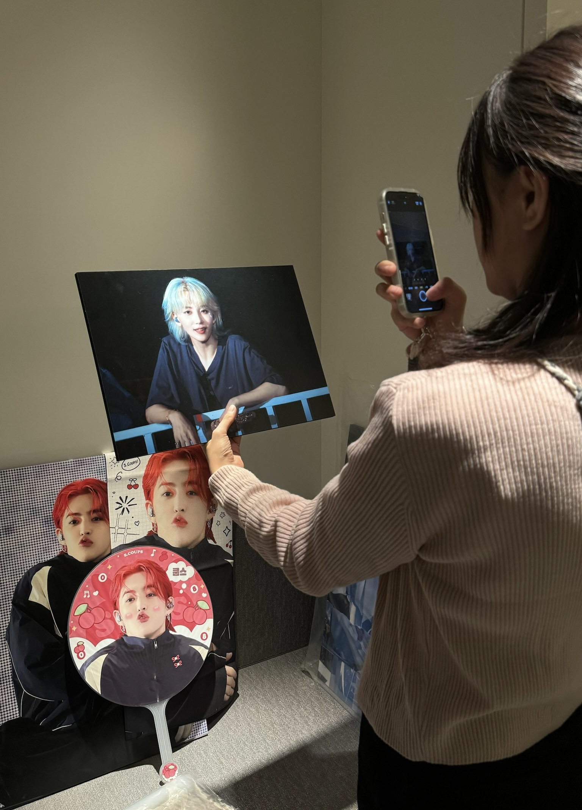
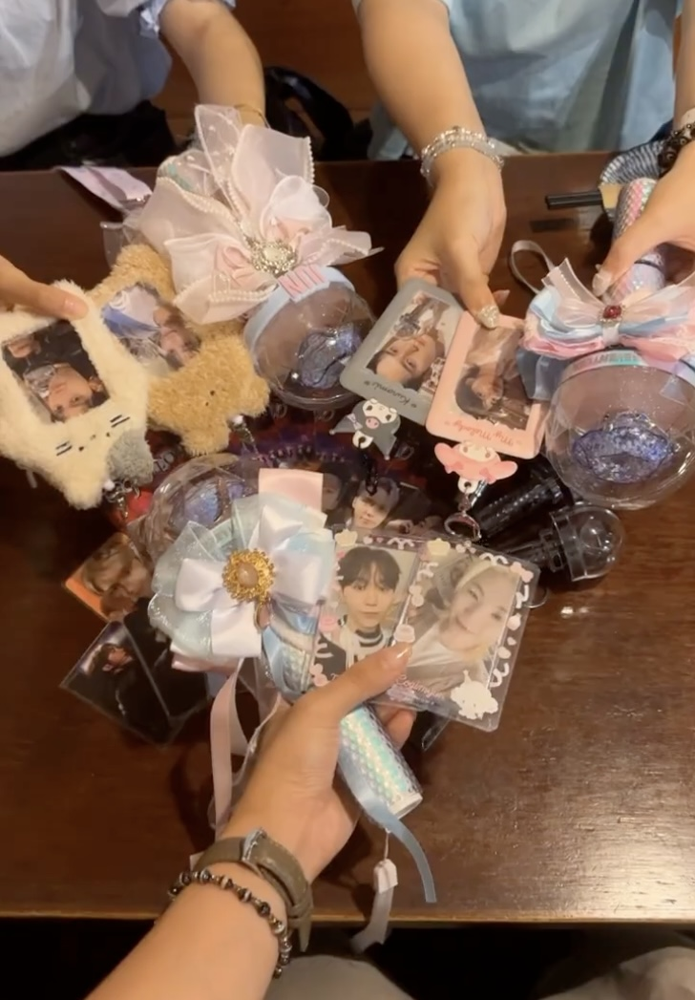
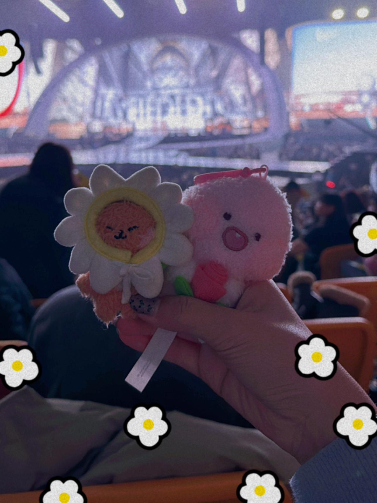
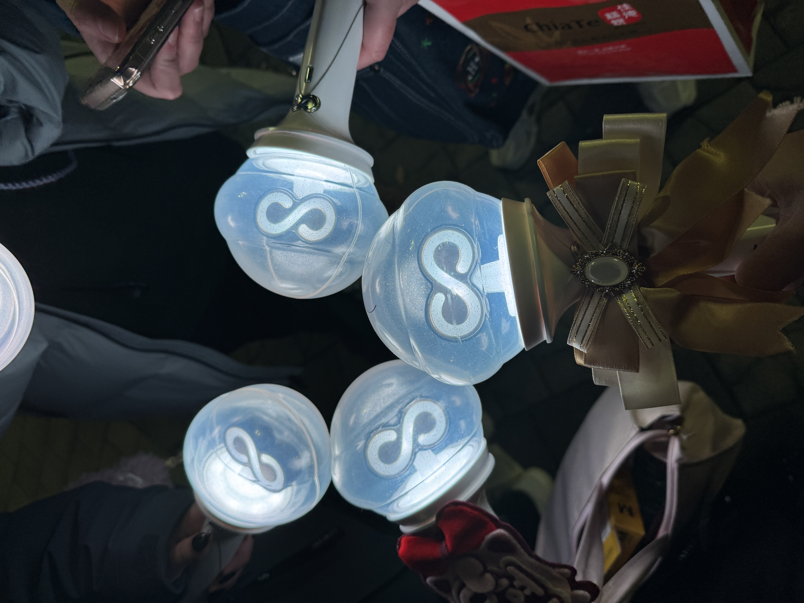
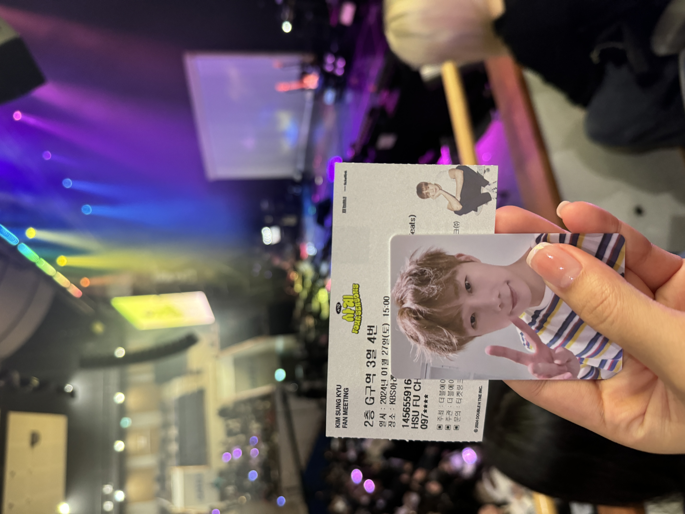

好想好像見到他⋯⋯
Pone則是追seventeen超過8年時間，雖然剛開始有買過生圖自行製作應援扇，在演唱會現場發送給大家。
卻因為護理師工作繁重退回成單純粉絲，當年也經營推特粉專的他，為此自學修圖軟體與韓文，期望終有一天能與偶像說上話。



談及自己偶像認真準備才藝與回中國參與戲劇活動而被謾罵時，Pone忍不住淚灑現場。
他說道，只要看著Seventeen的綜藝、MV與演唱會電影，彷彿重新為生活注入能量，更是他暫時脫離工作的快樂時光。
好想好像見到他⋯⋯
若論起追星，Ruby應該可以算是骨灰級粉絲。
因為獲得家人大力支持，讓他在國中時就和媽媽飛到韓國看INFINITE。今年的他，更是飛往韓國4次，最瘋狂時僅用一個假日，看完演唱會就返台。
細數成為INSPIRIT（粉絲名）的起源，Ruby驚訝發現已經過了13個年頭。



Ruby透露，由於INFINITE相對小眾，絕大多數的粉絲都已追星多年，疫情後首次飛韓國的演唱會，親眼見證偶像帶來精湛的舞台演出，讓他暗自下定決心，從今往後所有演唱會都不會缺席，絕對會到現場親自應援。